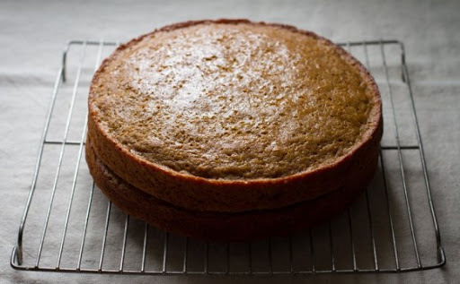

My favorite food is the Carrot Cake!

Here's a family recipe for it:
Ingredients
- 1 tbsp baking soda
- 1 cup corn oil
- 2 cups flour
- 2 cup sugar
- 1 tsp salt
- 4 carrots
- 4 eggs
Preparing
- Preheat the oven at 300F
- Butter a cake pan and lightly dust with flour
- Blend carrots, oil, and eggs
- Fill a bowl with the dry ingredients
- Pour blender mixture in the bowl
- Mix VIOLENTLY
- Put the angry mixture in the cake pan
- Bring to the oven for 40 minutes
- Take it out, and serve happily!